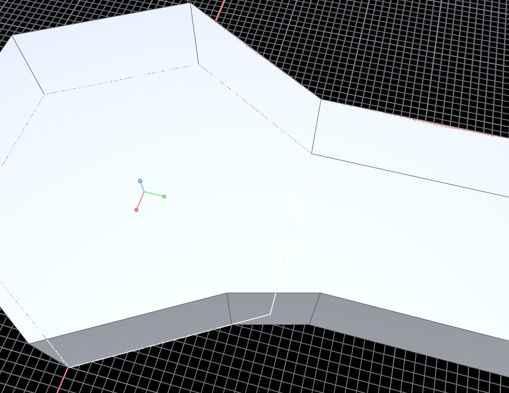
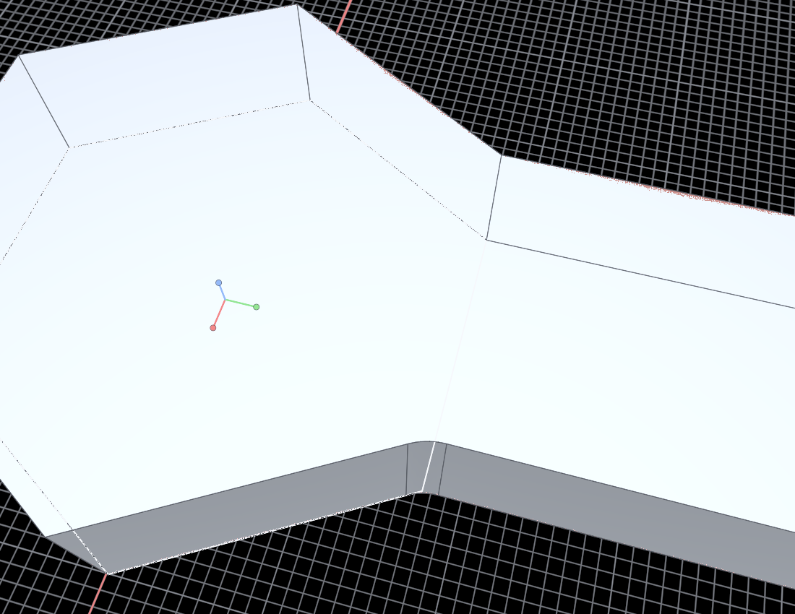

Regenerated from Scripts/Phase21_Blends.arc. The selected top edge and the selected vertical arm-tip edge are each shown as a planar chamfer and a tangent fillet. The final four panels are the repaired re-entrant handle root: full-part views plus close views of the one clean bevel face and the one tangent circular roll.

